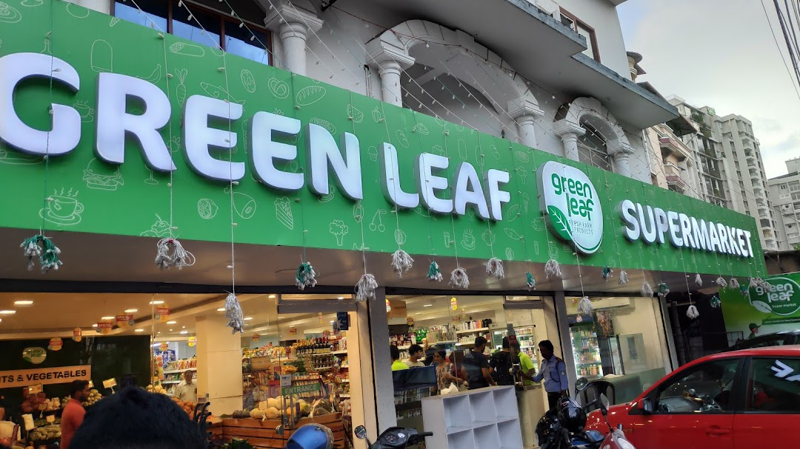

Services offering by Grocies Supermarket
The below table showcases the servcies that our customers can experience when visiting to our physical and online supermarket.
| Services | Online | Physicle |
|---|---|---|
| Exchanging | ||
| Money Return | ||
| Sample / Testings | ||
| Online Payments |
Our Branches
Negombo
Negombo Grocies Supermarket which is also known as The Good Market is the second branch of our company which is located in the beach side. This shop is more popular amoung touarists from European countries. Grocies chain's most poplar branch is this.

Kandy
Kandy branch of Grocies Supermarket is named as Green Leaf. People in Kandy town, tourists visits this branch daily. Most number of fresh vegetables, friuts are displayed to be selled in this Super Market.
Galle
Galle Grocies Supermarket is located near the beach. This shop is popular amoung touarists and the locals.